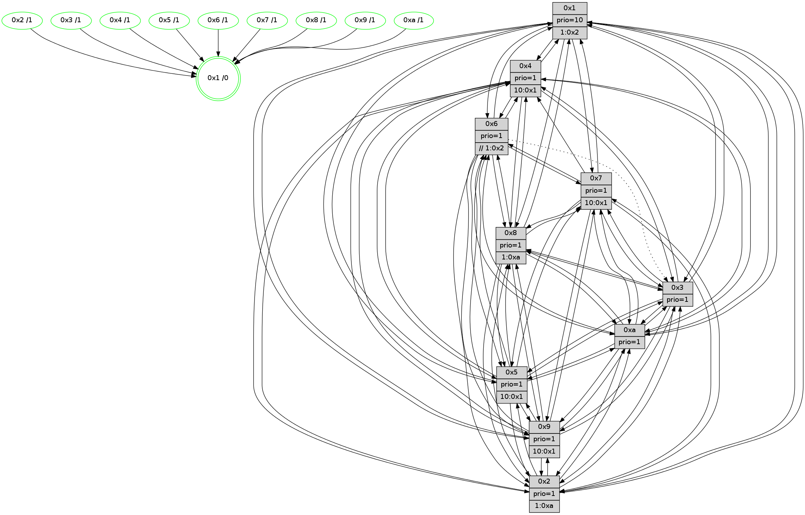

>> << IDX [start] -100 -25 -5 +0 +5 +25 +100 [1345.00001597]
 Previous packets
----------------------------------------------------------------------
1340.251244 beacon01(faad) #0 coord=01,02,03,04,05,06,07,0a,09,08 cycle=688.0ms assoc
-- color-indic=1 64 d3 2b
1340.261226 beacon02(faad) #0 coord=01,02,03,04,05,06,07,0a,09,08 cycle=688.0ms assoc 64 40 1a
1340.271227 beacon03(faad) #0 coord=01,02,03,04,05,06,07,0a,09,08 cycle=688.0ms assoc 64 3a 57
1340.281227 beacon04(faad) #0 coord=01,02,03,04,05,06,07,0a,09,08 cycle=688.0ms assoc 64 4d bd
1340.291227 beacon05(faad) #0 coord=01,02,03,04,05,06,07,0a,09,08 cycle=688.0ms assoc 64 37 f0
1340.301226 beacon06(faad) #0 coord=01,02,03,04,05,06,07,0a,09,08 cycle=688.0ms assoc 64 b9 27
1340.311228 beacon07(faad) #0 coord=01,02,03,04,05,06,07,0a,09,08 cycle=688.0ms assoc 64 c3 6a
1340.321234 beacon0a(faad) #0 coord=01,02,03,04,05,06,07,0a,09,08 cycle=688.0ms assoc 64 b2 61
1340.341234 beacon08(faad) #0 coord=01,02,03,04,05,06,07,0a,09,08 cycle=688.0ms assoc 64 46 fb
1340.352464 [Hello(5): seq=855 sym=7,6,4,3,1,9,8,10,2 sysInfo=hasWarning stat=7:6,6,9,0/6:11,14,7,4/4:11,12,15,14/3:2,8,3,1/1:5,8,7,0/9:7,6,11,10/8:9,7,13,4/10:9,7,12,8/2:14,3,4,7]
1340.355987 [Color(10) seq=444 @0:0 prio=1]
1340.357438 [Hello(2): seq=851 sym=4,5,7,6,9,8,10,1 sysInfo=hasWarning stat=4:7,14,0,12/5:5,10,9,2/7:4,12,0,1/6:1,4,1,0/9:0,12,4,9/8:15,14,11,12/10:7,7,15,10/1:13,1,7,0]
1340.360931 [Hello(6): seq=855 sym=2,5,4,7,9,8,10,1 sysInfo=hasWarning stat=2:3,6,1,0/5:15,5,0,3/4:1,0,4,7/7:2,14,13,15/9:14,0,11,10/8:0,5,6,6/10:14,6,1,12/1:10,3,10,1]
1340.363481 [Color(2) seq=431 @0:0 prio=1 >1.@a]
1340.365884 [Color(6) seq=487 @0:0 prio=1 >>1.@2,1.@3,1.@4]
1340.368588 [Hello(3): seq=855 sym=1,7,2,4,8,9,10,5 sysInfo=hasWarning stat=1:14,8,13,0/7:14,13,3,14/2:6,13,14,2/4:6,6,6,12/8:6,12,13,5/9:8,11,7,0/10:4,6,9,4/5:9,1,6,0]
1340.371611 [Color(3) seq=484 @0:0 prio=1]
----------------------------------------------------------------------
1341.039378 beacon01(faad) #0 coord=01,02,03,04,05,06,07,0a,09,08 cycle=688.0ms assoc
-- color-indic=1 64 6f 2e
1341.049360 beacon02(faad) #0 coord=01,02,03,04,05,06,07,0a,09,08 cycle=688.0ms assoc 64 fc 1f
1341.059360 beacon03(faad) #0 coord=01,02,03,04,05,06,07,0a,09,08 cycle=688.0ms assoc 64 86 52
1341.069360 beacon04(faad) #0 coord=01,02,03,04,05,06,07,0a,09,08 cycle=688.0ms assoc 64 f1 b8
1341.079361 beacon05(faad) #0 coord=01,02,03,04,05,06,07,0a,09,08 cycle=688.0ms assoc 64 8b f5
1341.089360 beacon06(faad) #0 coord=01,02,03,04,05,06,07,0a,09,08 cycle=688.0ms assoc 64 05 22
1341.099362 beacon07(faad) #0 coord=01,02,03,04,05,06,07,0a,09,08 cycle=688.0ms assoc 64 7f 6f
1341.109366 beacon0a(faad) #0 coord=01,02,03,04,05,06,07,0a,09,08 cycle=688.0ms assoc 64 0e 64
1341.119364 beacon09(faad) #0 coord=01,02,03,04,05,06,07,0a,09,08 cycle=688.0ms assoc 64 80 b3
1341.129365 beacon08(faad) #0 coord=01,02,03,04,05,06,07,0a,09,08 cycle=688.0ms assoc 64 fa fe
1341.140912 [Hello(10): seq=788 sym=6,2,3,8,7,5,9,4,1 sysInfo=hasWarning stat=6:6,12,11,3/2:5,8,0,0/3:11,5,0,14/8:3,2,11,3/7:6,6,8,9/5:13,11,9,0/9:2,4,1,0/4:15,2,6,1/1:4,8,6,1]
1341.144140 [Color(5) seq=418 @0:0 prio=1 >10.@1,1.@6,1.@7,1.@8]
1341.146151 [Hello(9): seq=799 sym=2,5,3,4,7,6,8,10,1 sysInfo=hasWarning stat=2:9,6,11,10/5:14,15,13,7/3:10,10,3,3/4:8,14,15,1/7:8,5,2,4/6:7,11,9,13/8:9,5,15,5/10:5,3,2,4/1:8,13,13,1]
1341.149014 [Hello(8): seq=799 sym=5,2,3,7,9,6,4,10,1 sysInfo=hasWarning stat=5:11,13,2,0/2:3,13,6,12/3:14,0,10,3/7:1,7,1,1/9:13,11,4,4/6:0,14,8,15/4:7,13,2,0/10:3,4,8,4/1:2,13,12,0]
1341.153741 [Color(8) seq=454 @0:0 prio=1 >1.@a]
1341.155417 [Hello(7): seq=855 sym=2,3,5,6,4,8,9,10,1 sysInfo=hasWarning stat=2:6,5,14,3/3:1,11,0,3/5:13,0,6,2/6:8,5,14,11/4:6,13,2,0/8:0,3,7,0/9:8,3,5,1/10:7,13,10,6/1:7,2,9,0]
1341.158570 [Color(7) seq=383 @0:0 prio=1 >10.@1,1.@5,1.@6,1.@8]
1341.162593 [STC(1) #0.225 tree-change,inconsistent-stability,stable,to-color d=0]
1341.164550 [Color(1) seq=535 @0:0 prio=10 >1.@2,1.@3,1.@4,1.@5]
1341.166245 [Hello(4): seq=855 sym=5,6,2,3,9,10,1 sysInfo= stat=5:9,12,0,1/6:4,7,7,14/2:13,3,0,0/3:4,3,9,14/9:3,11,9,1/10:0,9,13,14/1:13,9,12,1]
1341.171069 [Color(4) seq=394 @0:0 prio=1 >10.@1,1.@2,1.@3,1.@5]
----------------------------------------------------------------------
1341.827511 beacon01(faad) #0 coord=01,02,03,04,05,06,07,0a,09,08 cycle=688.0ms assoc
-- color-indic=1 64 bb 1b
1341.837494 beacon02(faad) #0 coord=01,02,03,04,05,06,07,0a,09,08 cycle=688.0ms assoc 64 28 2a
1341.847493 beacon03(faad) #0 coord=01,02,03,04,05,06,07,0a,09,08 cycle=688.0ms assoc 64 52 67
1341.857495 beacon04(faad) #0 coord=01,02,03,04,05,06,07,0a,09,08 cycle=688.0ms assoc 64 25 8d
1341.867495 beacon05(faad) #0 coord=01,02,03,04,05,06,07,0a,09,08 cycle=688.0ms assoc 64 5f c0
1341.877494 beacon06(faad) #0 coord=01,02,03,04,05,06,07,0a,09,08 cycle=688.0ms assoc 64 d1 17
1341.887494 beacon07(faad) #0 coord=01,02,03,04,05,06,07,0a,09,08 cycle=688.0ms assoc 64 ab 5a
1341.897499 beacon0a(faad) #0 coord=01,02,03,04,05,06,07,0a,09,08 cycle=688.0ms assoc 64 da 51
1341.917499 beacon08(faad) #0 coord=01,02,03,04,05,06,07,0a,09,08 cycle=688.0ms assoc 64 2e cb
1341.928462 [STC(7)->1 #0.225 tree-change,inconsistent-stability,stable,to-color d=1]
1341.929760 [STC(8)->1 #0.225 tree-change,inconsistent-stability,stable,to-color d=1]
1341.932988 [STC(9)->1 #0.225 tree-change,inconsistent-stability,stable,to-color d=1]
1341.934859 [STC(10)->1 #0.225 tree-change,inconsistent-stability,stable,to-color d=1]
1341.936345 [Color(9) seq=415 @0:0 prio=1 >10.@1,1.@5,1.@a]
1341.938118 [Hello(1): seq=765 sym=4,2,9,5,10,3,8,6,7 sysInfo=coloring-mode-on,ColoringModeRequestCalled stat=4:1,5,1,2/2:11,11,9,5/9:11,6,15,1/5:4,3,14,8/10:7,3,13,7/3:11,5,10,10/8:14,14,12,2/6:0,1,10,0/7:11,15,4,1]
1341.942378 [Color(10) seq=445 @0:0 prio=1]
1341.945018 [Hello(2): seq=852 sym=4,5,7,3,9,8,10,1 sysInfo=hasWarning stat=4:8,15,0,12/5:5,11,9,2/7:5,13,0,1/3:0,1,0,0/9:1,13,4,9/8:0,15,11,12/10:8,8,15,10/1:14,2,8,0]
1341.947881 [Hello(6): seq=856 sym=2,5,4,7,9,8,10,1 asym=3 sysInfo=hasWarning stat=2:3,6,1,0/5:15,6,0,3/4:2,1,4,7/7:3,15,13,15/9:15,0,11,10/8:1,6,6,6/10:15,6,1,12/1:10,4,11,1/3:0,1,0,0]
1341.951698 [STC(2)->1 #0.225 tree-change,inconsistent-stability,stable,to-color d=1]
1341.953261 [Hello(3): seq=856 sym=1,7,2,4,8,9,10,5 sysInfo=hasWarning stat=1:15,9,14,0/7:15,14,3,14/2:6,13,14,2/4:7,7,6,12/8:7,13,13,5/9:9,11,7,0/10:5,7,9,4/5:9,2,6,0]
1341.958215 [STC(3)->1 #0.225 tree-change,inconsistent-stability,stable,to-color d=1]
1341.961469 [Color(3) seq=485 @0:0 prio=1]
1341.963122 [Hello(5): seq=856 sym=7,6,4,3,1,9,8,10,2 sysInfo=hasWarning stat=7:7,7,9,0/6:12,14,7,4/4:12,13,15,14/3:3,9,3,1/1:5,9,8,0/9:8,7,11,10/8:10,8,13,4/10:10,8,12,8/2:15,4,4,7]
1341.965953 [STC(5)->1 #0.225 tree-change,inconsistent-stability,stable,to-color d=1]
1341.967187 [STC(6)->1 #0.225 tree-change,inconsistent-stability,stable,to-color d=1]
1341.970104 [Color(6) seq=488 @0:0 prio=1 >>1.@2,1.@3,1.@4]
1341.971965 [Color(2) seq=432 @0:0 prio=1 >1.@a]
----------------------------------------------------------------------
1342.615642 beacon01(faad) #0 coord=01,02,03,04,05,06,07,0a,09,08 cycle=688.0ms assoc
-- color-indic=1 64 07 1e
1342.625625 beacon02(faad) #0 coord=01,02,03,04,05,06,07,0a,09,08 cycle=688.0ms assoc 64 94 2f
1342.635625 beacon03(faad) #0 coord=01,02,03,04,05,06,07,0a,09,08 cycle=688.0ms assoc 64 ee 62
1342.645626 beacon04(faad) #0 coord=01,02,03,04,05,06,07,0a,09,08 cycle=688.0ms assoc 64 99 88
1342.655624 beacon05(faad) #0 coord=01,02,03,04,05,06,07,0a,09,08 cycle=688.0ms assoc 64 e3 c5
1342.665623 beacon06(faad) #0 coord=01,02,03,04,05,06,07,0a,09,08 cycle=688.0ms assoc 64 6d 12
1342.675624 beacon07(faad) #0 coord=01,02,03,04,05,06,07,0a,09,08 cycle=688.0ms assoc 64 17 5f
1342.685630 beacon0a(faad) #0 coord=01,02,03,04,05,06,07,0a,09,08 cycle=688.0ms assoc 64 66 54
1342.705631 beacon08(faad) #0 coord=01,02,03,04,05,06,07,0a,09,08 cycle=688.0ms assoc 64 92 ce
1342.717481 [Hello(9): seq=800 sym=2,5,3,4,7,6,8,10,1 sysInfo=hasWarning stat=2:10,7,12,10/5:15,15,14,7/3:11,11,4,3/4:9,15,15,1/7:9,6,3,4/6:8,12,10,13/8:10,6,0,5/10:5,4,2,4/1:9,14,14,1]
1342.720513 [Color(1) seq=536 @0:0 prio=10 >1.@2,1.@3,1.@4,1.@5]
1342.722270 [Hello(4): seq=856 sym=5,6,2,3,9,10,1 sysInfo= stat=5:10,12,1,1/6:5,8,8,14/2:14,4,1,0/3:5,4,10,14/9:3,12,10,1/10:1,10,14,14/1:14,9,12,1]
1342.724424 [Hello(8): seq=800 sym=5,2,3,7,9,6,4,10,1 sysInfo=hasWarning stat=5:12,14,3,0/2:4,14,7,12/3:15,1,11,3/7:2,8,1,1/9:13,12,5,4/6:1,15,9,15/4:8,14,2,0/10:4,5,9,4/1:3,14,13,0]
1342.727503 [Color(5) seq=419 @0:0 prio=1 >10.@1,1.@6,1.@7,1.@8]
1342.729336 [Hello(7): seq=856 sym=2,3,5,6,4,8,9,10,1 sysInfo=hasWarning stat=2:7,6,15,3/3:2,12,1,3/5:14,0,7,2/6:9,6,15,11/4:7,14,2,0/8:0,3,8,0/9:8,4,6,1/10:8,14,11,6/1:8,3,10,0]
1342.733455 [Color(7) seq=384 @0:0 prio=1 >10.@1,1.@5,1.@6,1.@8]
1342.735865 [Color(4) seq=395 @0:0 prio=1 >10.@1,1.@2,1.@3,1.@5]
1342.739156 [Color(8) seq=455 @0:0 prio=1 >1.@a]
1342.742097 [Hello(10): seq=789 sym=6,2,3,8,7,5,9,4,1 sysInfo=hasWarning stat=6:7,13,12,3/2:6,9,1,0/3:12,6,1,14/8:4,3,12,3/7:7,7,9,9/5:14,12,10,0/9:3,4,1,0/4:0,3,6,1/1:4,9,7,1]
----------------------------------------------------------------------
1343.403773 beacon01(faad) #0 coord=01,02,03,04,05,06,07,0a,09,08 cycle=688.0ms assoc
-- color-indic=1 64 c3 10
1343.413755 beacon02(faad) #0 coord=01,02,03,04,05,06,07,0a,09,08 cycle=688.0ms assoc 64 50 21
1343.423755 beacon03(faad) #0 coord=01,02,03,04,05,06,07,0a,09,08 cycle=688.0ms assoc 64 2a 6c
1343.433755 beacon04(faad) #0 coord=01,02,03,04,05,06,07,0a,09,08 cycle=688.0ms assoc 64 5d 86
1343.443757 beacon05(faad) #0 coord=01,02,03,04,05,06,07,0a,09,08 cycle=688.0ms assoc 64 27 cb
1343.453756 beacon06(faad) #0 coord=01,02,03,04,05,06,07,0a,09,08 cycle=688.0ms assoc 64 a9 1c
1343.463757 beacon07(faad) #0 coord=01,02,03,04,05,06,07,0a,09,08 cycle=688.0ms assoc 64 d3 51
1343.473761 beacon0a(faad) #0 coord=01,02,03,04,05,06,07,0a,09,08 cycle=688.0ms assoc 64 a2 5a
1343.493761 beacon08(faad) #0 coord=01,02,03,04,05,06,07,0a,09,08 cycle=688.0ms assoc 64 56 c0
1343.506297 [Hello(1): seq=766 sym=4,2,9,5,10,3,8,6,7 sysInfo=coloring-mode-on,ColoringModeRequestCalled stat=4:2,6,1,2/2:12,12,10,5/9:12,6,15,1/5:5,4,15,8/10:8,4,13,7/3:12,6,11,10/8:14,15,12,2/6:1,2,11,0/7:12,0,4,1]
1343.509332 [Color(10) seq=446 @0:0 prio=1]
1343.510727 [Hello(6): seq=857 sym=2,5,4,7,9,8,10,1 asym=3 sysInfo=hasWarning stat=2:3,7,1,0/5:15,7,0,3/4:3,2,4,7/7:4,0,14,15/9:0,0,11,10/8:1,7,7,6/10:0,6,1,12/1:10,5,11,1/3:0,1,0,0]
1343.513437 [Hello(3): seq=857 sym=1,7,2,4,8,9,10,5 sysInfo=hasWarning stat=1:15,10,14,0/7:0,15,4,14/2:6,14,14,2/4:8,8,6,12/8:7,14,14,5/9:10,11,7,0/10:6,7,9,4/5:10,3,7,0]
1343.516123 [Color(3) seq=486 @0:0 prio=1]
1343.519209 [Hello(2): seq=853 sym=4,5,7,3,9,8,10,1 sysInfo=hasWarning stat=4:9,0,0,12/5:5,12,9,2/7:6,14,1,1/3:0,1,0,0/9:2,13,4,9/8:0,0,12,12/10:9,8,15,10/1:14,3,8,0]
1343.522852 [Color(2) seq=433 @0:0 prio=1 >1.@a]
1343.528425 [Color(9) seq=416 @0:0 prio=1 >10.@1,1.@5,1.@a]
1343.530778 [Color(6) seq=489 @0:0 prio=1 >>1.@2,1.@3,1.@4]
----------------------------------------------------------------------
1344.191904 beacon01(faad) #0 coord=01,02,03,04,05,06,07,0a,09,08 cycle=688.0ms assoc
-- color-indic=1 64 7f 15
1344.201887 beacon02(faad) #0 coord=01,02,03,04,05,06,07,0a,09,08 cycle=688.0ms assoc 64 ec 24
1344.211885 beacon03(faad) #0 coord=01,02,03,04,05,06,07,0a,09,08 cycle=688.0ms assoc 64 96 69
1344.221887 beacon04(faad) #0 coord=01,02,03,04,05,06,07,0a,09,08 cycle=688.0ms assoc 64 e1 83
1344.231888 beacon05(faad) #0 coord=01,02,03,04,05,06,07,0a,09,08 cycle=688.0ms assoc 64 9b ce
1344.241888 beacon06(faad) #0 coord=01,02,03,04,05,06,07,0a,09,08 cycle=688.0ms assoc 64 15 19
1344.251887 beacon07(faad) #0 coord=01,02,03,04,05,06,07,0a,09,08 cycle=688.0ms assoc 64 6f 54
1344.261892 beacon0a(faad) #0 coord=01,02,03,04,05,06,07,0a,09,08 cycle=688.0ms assoc 64 1e 5f
1344.281891 beacon08(faad) #0 coord=01,02,03,04,05,06,07,0a,09,08 cycle=688.0ms assoc 64 ea c5
1344.293760 [Hello(10): seq=790 sym=6,2,3,8,7,5,9,4,1 sysInfo=hasWarning stat=6:8,14,12,3/2:7,10,1,0/3:13,7,1,14/8:4,3,12,3/7:7,7,9,9/5:14,12,10,0/9:3,5,1,0/4:0,3,6,1/1:5,9,7,1]
1344.297438 [Color(1) seq=537 @0:0 prio=10 >1.@2,1.@3,1.@4,1.@5]
1344.301372 [Hello(9): seq=801 sym=2,5,3,4,7,6,8,10,1 sysInfo=hasWarning stat=2:10,7,12,10/5:15,0,14,7/3:11,11,4,3/4:10,0,15,1/7:10,7,3,4/6:8,13,10,13/8:10,7,0,5/10:6,4,2,4/1:10,15,14,1]
1344.306025 [Color(5) seq=420 @0:0 prio=1 >10.@1,1.@6,1.@7,1.@8]
1344.310889 [Hello(7): seq=857 sym=2,3,5,6,4,8,9,10,1 sysInfo=hasWarning stat=2:8,7,15,3/3:3,13,1,3/5:14,0,7,2/6:10,7,15,11/4:7,15,2,0/8:0,4,8,0/9:9,5,6,1/10:9,15,11,6/1:9,3,10,0]
1344.315001 [Color(7) seq=385 @0:0 prio=1 >10.@1,1.@5,1.@6,1.@8]
1344.316737 [Hello(4): seq=857 sym=5,8,6,2,3,9,10,1 sysInfo= stat=5:11,12,1,1/8:0,1,0,0/6:6,9,8,14/2:15,5,1,0/3:6,4,10,14/9:4,13,10,1/10:2,11,14,14/1:15,9,12,1]
1344.320405 [Color(4) seq=396 @0:0 prio=1 >10.@1,1.@2,1.@3,1.@5]
1344.327114 [Hello(8): seq=801 sym=5,2,3,7,9,6,4,10,1 sysInfo=hasWarning stat=5:12,14,3,0/2:5,15,7,12/3:0,2,11,3/7:2,8,1,1/9:14,13,5,4/6:2,0,9,15/4:8,14,2,0/10:5,6,9,4/1:4,15,13,0]
1344.330908 [Color(8) seq=456 @0:0 prio=1 >1.@a]
----------------------------------------------------------------------
1344.980034 beacon01(faad) #0 coord=01,02,03,04,05,06,07,0a,09,08 cycle=688.0ms assoc
-- color-indic=1 64 4b 0d
1344.990016 beacon02(faad) #0 coord=01,02,03,04,05,06,07,0a,09,08 cycle=688.0ms assoc 64 d8 3c